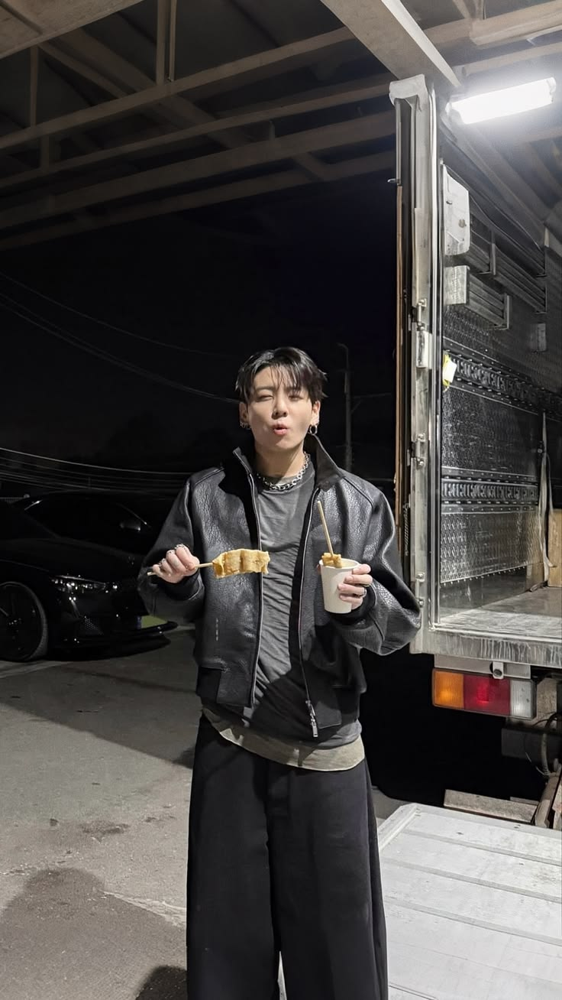

Beberapa hal
yang tak pernah kita bilang.
Sera dan Gaska sudah berteman sejak lama. Mereka tumbuh dengan kebiasaan saling mencari, saling mengejek, dan saling mengingatkan hal-hal kecil. Sera tahu Gaska sering lupa makan kalau sedang sibuk; Gaska tahu Sera akan pura-pura tidak peduli, padahal selalu jadi orang pertama yang memastikan ia baik-baik saja.
Mereka berteman, saling mencari saat hari terasa berat, saling mengganggu tanpa perlu alasan. Kadang terlalu dekat untuk disebut teman biasa, tetapi selalu berhenti sebelum salah satu dari mereka bertanya: sebenarnya kita ini apa?
Pagi ini, sebelum mereka berpisah di sekolah, Sera menyodorkan ponselnya kepada Gaska. “Titip dulu, ya. Kalau aku belum balik, balikin nanti.” Ia mengatakannya sesantai menitipkan buku. Gaska menerimanya tanpa curiga—mereka sudah terlalu lama saling percaya untuk mempertanyakan hal sekecil itu.
Tak lama kemudian, sebuah pengingat muncul di layar. Dan untuk pertama kalinya, Gaska harus memutuskan apakah ia cukup berani membuka hal-hal yang selama ini hanya mereka simpan dalam diam.
Dari Sera

Bagian ini akan digunakan saat alur cerita membawamu ke sini.
Pratinjau · belum waktunya digunakanSemua Foto · beberapa kenangan masih terkunci
Ada dua akhir yang menunggu di Safari. Kalau kamu takut semuanya berubah, pikirkan dua kata yang sering dipakai untuk menjaga hubungan tetap seperti semula. Kalau kamu ingin tahu harapan Sera, cari judul lagu Taylor Swift tentang cahaya yang datang setelah gelap.
Catatan: jawaban pencarian akan membuka petunjuk baru dan sebagian foto. Ending belum bisa dibuka sebelum semua bab diselesaikan.